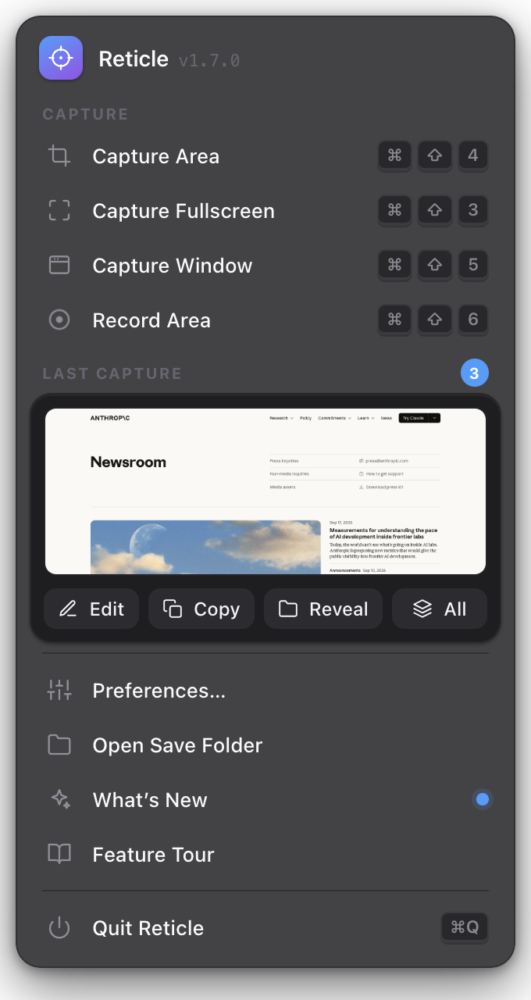
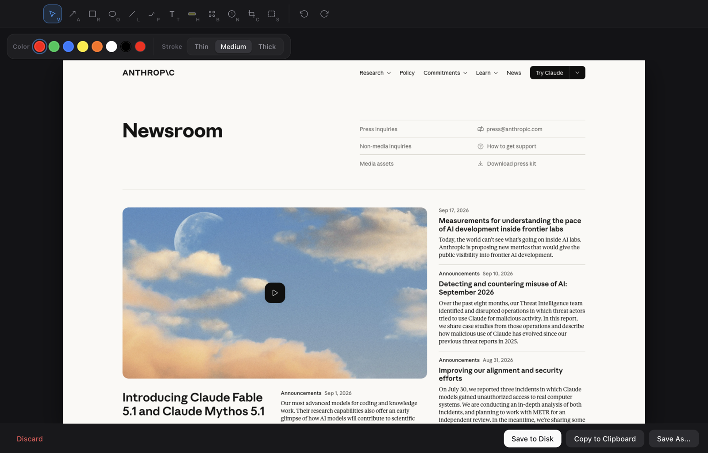
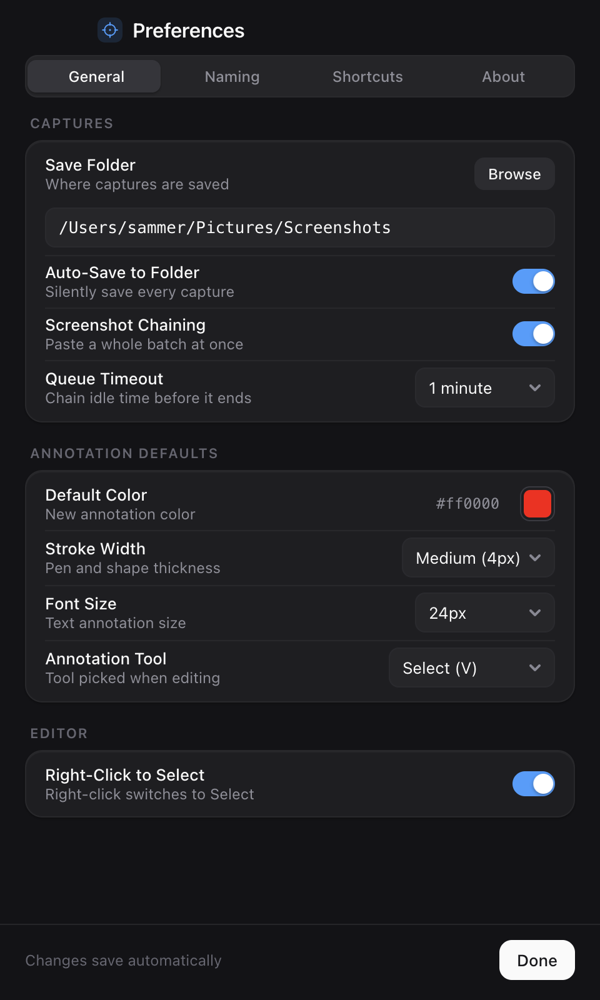
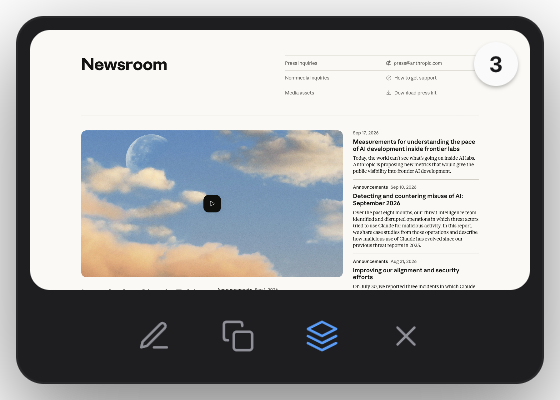
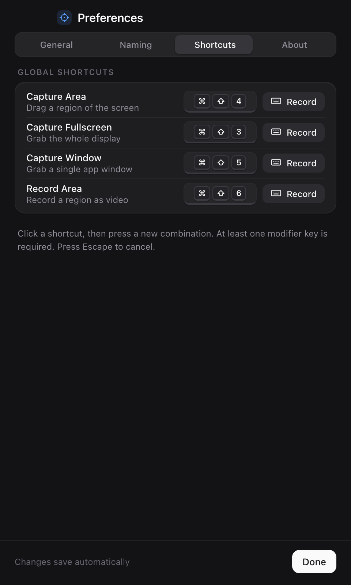
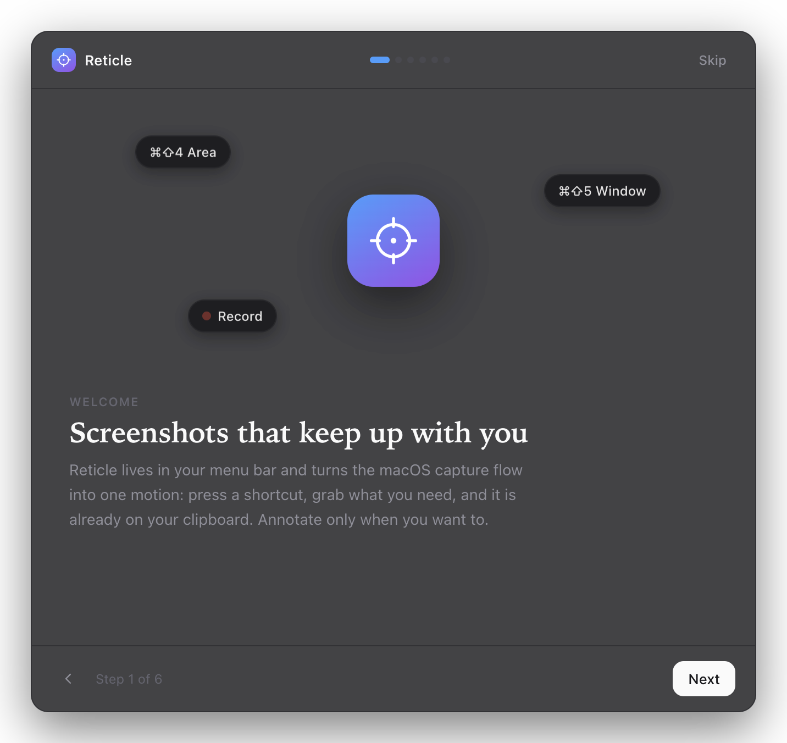
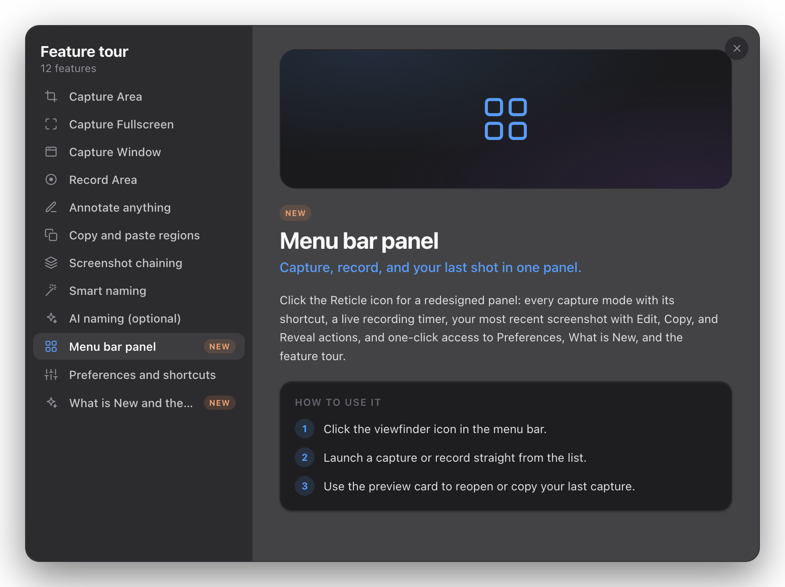

01
Capture without friction
Area, fullscreen, and window captures are shortcut-driven and land on the clipboard instantly. Record a region to video when a still is not enough.
Reticle lives in your menu bar and turns the macOS capture flow into one motion: press a shortcut, grab what you need, and it is already on your clipboard. Annotate only when you want to.



Area, fullscreen, and window captures are shortcut-driven and land on the clipboard instantly. Record a region to video when a still is not enough.
Arrows, rectangles, ovals, lines, freehand, text, highlight, blur, counters, crop, and undo in one focused editor, with a rebuilt toolbar and stroke controls.
Capture a run of steps, queue them automatically, cycle through edits, and paste the whole batch at once. The new thumbnail keeps every shot, copy, and edit one click away.

macOS Vision OCR reads the screen and names the file for you. Turn on optional DeepSeek naming for AI suggestions, with OCR as the fallback. Nothing leaves the Mac unless you enable it.

Rebuilt Preferences: segmented panes for General, Naming, Shortcuts, and About, with click-to-record keycap controls for every capture and recording action.

Left-click the icon for a redesigned panel: every capture and record mode with its shortcut, a live recording timer, your latest shot with Edit, Copy, and Reveal, plus one-click access to Preferences and the tour.
A six-page welcome tour walks through capture, annotate, chain, and export, with a live permission checklist so screen recording is granted before you need it.

Every release ships a What’s New card and a searchable feature tour, so the new tools are easy to find without digging through release notes.

A free, private macOS utility designed around speed, clarity, and fewer tiny workflow papercuts.